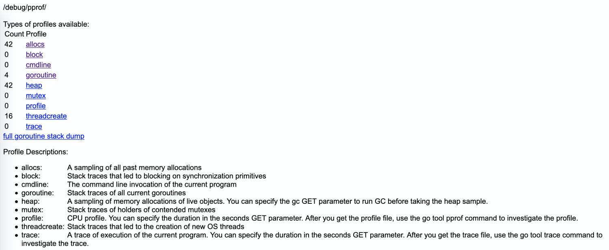
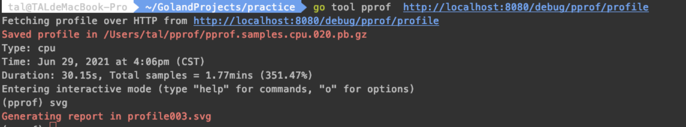
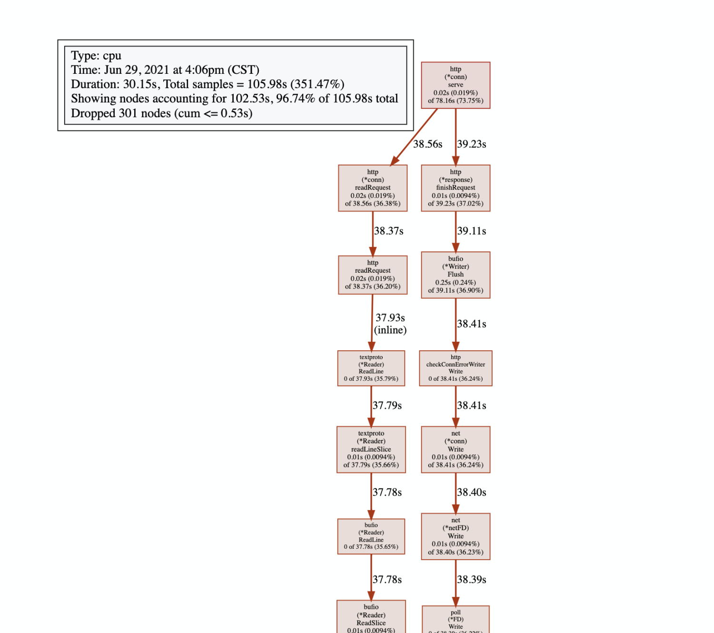
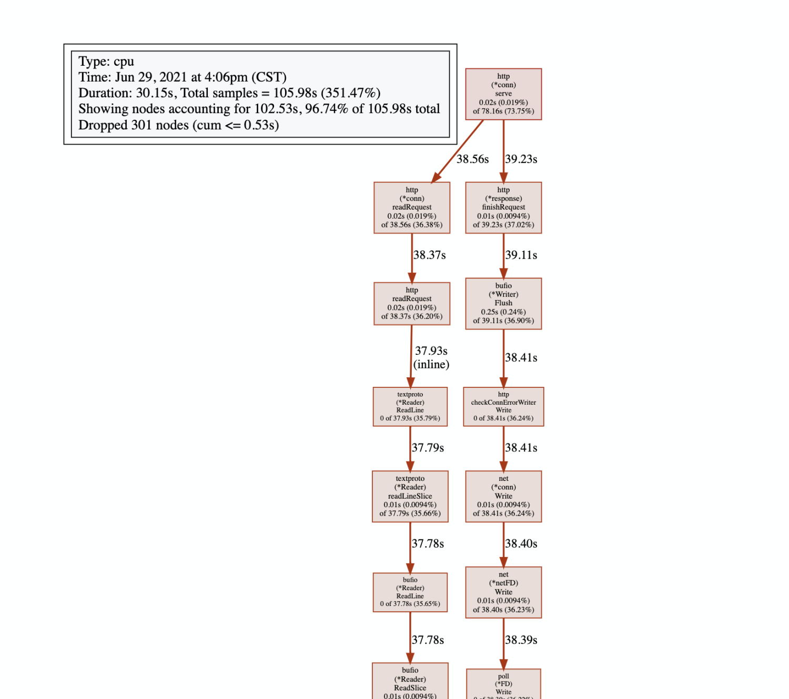
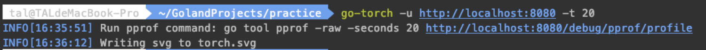
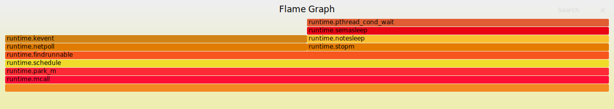
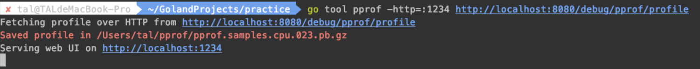
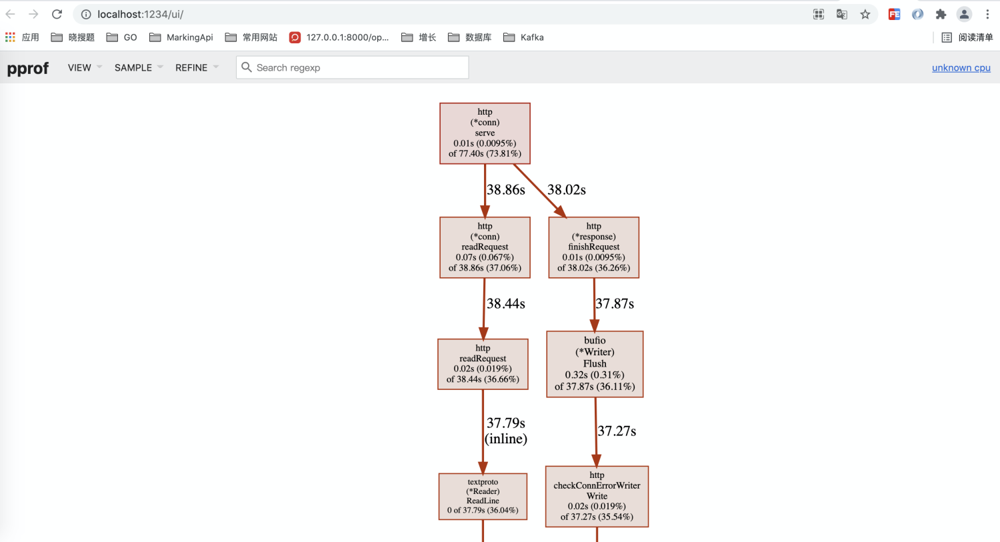
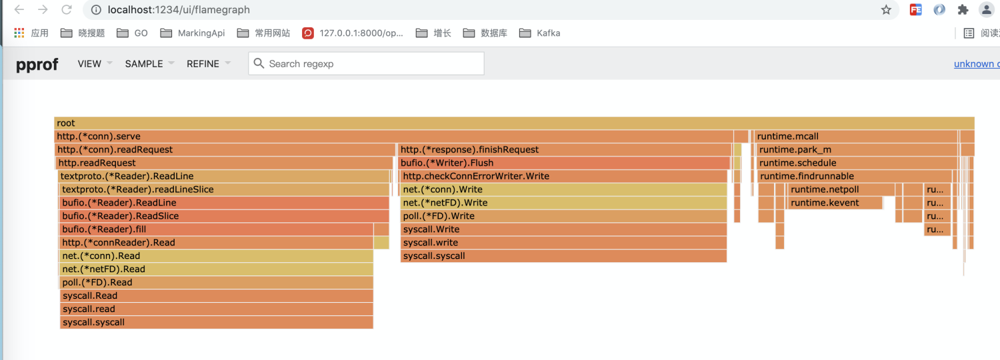

1.1. 安装graphviz
brew install graphviz
1.2. 安装FlameGraph
git clone https://github.com/brendangregg/FlameGraph.git
cp flamegraph.pl /usr/local/bin
1.3. 安装go-torch
go get -u github.com/uber/go-torch
🌰测试例子
package main
import (
"net/http"
_ "net/http/pprof"
)
func main() {
http.HandleFunc("/hello", func(w http.ResponseWriter, r *http.Request) {
w.Write([]byte("hello world!"))
})
_ = http.ListenAndServe("0.0.0.0:8080", nil)
}
注意： 1、要加入：_ "net/http/pprof"
运行之后，访问链接：http://127.0.0.1:8080/debug/pprof/ 
- allocs:过去所有内存分配的抽样
- block:导致同步原语阻塞的堆栈跟踪
- cmdline:当前程序的命令行调用
- goroutine:所有当前goroutine的堆栈跟踪
- heap:活动对象的内存分配抽样。您可以指定gc GET参数，以便在获取堆样本之前运行gc。
- mutex:争用互斥锁持有者的堆栈跟踪
- profile:CPU配置文件。可以以秒为单位指定持续时间。获得概要文件后，使用go工具pprof命令来研究概要文件。
- threadcreate:导致创建新的操作系统线程的堆栈跟踪
- trace:当前程序的执行跟踪。可以以秒为单位指定持续时间。获得跟踪文件后，使用go工具跟踪命令来调查跟踪。
下面的操作都要有请求数据，模仿请求：
wrk -c 20 -t 5 -d 3m http://127.0.0.1:8080/hello
1.4. 生成调用链耗时图
1、采样时间：go tool pprof http://ip:port/debug/pprof/profile?second=60 2、采样状态：看根据历史（-alloc_space）或正在使用（-inuse_space） go tool pprof -alloc_space http://ip:port/debug/pprof/profile?second=60 3、采样筛选： 运行 go tool pprof 命令时加上 –nodefration=0.05 参数，表示如果调用的子函数使用的 CPU、memory 不超过 5%，就忽略它，不要显示在图片中。
方式一：通过URL方式
执行命令：go tool pprof http://localhost:8080/debug/pprof/profile?seconds=20s

通过 生成svg文件后，可以直接在浏览器打开如下图：

生成svg文件后，可以直接在浏览器打开如下图：

方式二：通过压测属性的方式
结构体文件：
type Info struct {
Name string `json:"name"`
Age int `json:"age"`
}
使用easyjson和json包对比
压测文件：
package jsons
import (
"encoding/json"
"testing"
)
var jsonStr = `{
"name": "xiaoming",
"age": 18
}`
func Benchmark_Json(b *testing.B) {
b.ResetTimer()
j := new(Info)
for i := 1; i < b.N; i++ {
err := json.Unmarshal([]byte(jsonStr), j)
if err != nil {
b.Error(err)
}
if _, err := json.Marshal(j); err != nil {
b.Error(err)
}
}
}
func Benchmark_EasyJson(b *testing.B) {
b.ResetTimer()
j := Info{}
for i := 1; i < b.N; i++ {
err := j.UnmarshalJSON([]byte(jsonStr))
if err != nil {
b.Error(err)
}
if _, err := j.MarshalJSON(); err != nil {
b.Error(err)
}
}
}
执行以下命令： go test --bench=. -cpuprofile cpu.prof -memprofile mem.prof 生成cpu.prof，mem.prof以及jsons.test(根据包名生成)三个文件 执行命令：go tool pprof cpu.prof，查看具体的信息，以及生成调用链耗时图 或者执行：go tool pprof -http :1234 mem.prof 生成UI页面
执行命令：go-torch -b cpu.prof
1.5. 🔥火焰图生成方式
要生成火焰图，需要事先安装 FlameGraph工具
- 每个框代表一个栈里的一个函数
- Y轴代表栈深度（栈桢数）。最顶端的框显示正在运行的函数，这之下的框都是调用者。在下面的函数是上面函数的父函数
- X轴代表采样总量。从左到右并不代表时间变化，从左到右也不具备顺序性
- 框的宽度代表占用CPU总时间。宽的框代表的函数可能比窄的运行慢，或者被调用了更多次数。框的颜色深浅也没有任何意义
- 如果是多线程同时采样，采样总数会超过总时间
go-torch 工具的使用非常简单，没有任何参数的话，它会尝试从 http://localhost:8080/debug/pprof/profile 获取 profiling 数据。它有三个常用的参数可以调整：
-u --url：要访问的 URL，这里只是主机和端口部分-s --suffix：pprof profile 的路径，默认为/debug/pprof/profile--seconds：要执行 profiling 的时间长度，默认为 30s方式一：通过URL方式
执行命令：go-torch -u http://localhost:8080 -t 20 
生成的torch.svg如下： 
1.6. 以UI的方式展示
添加属性：-http=:1234
方式一：通过go tool pprof
执行命令：
go tool pprof -http=:1234 http://localhost:8080/debug/pprof/profile

等30s左右，跳转到：http://localhost:1234/ui/ 
点击：VIEW -> Flame Graph，可查看火焰图信息 
方式二：通过pprof命令
安装：go get -u github.com/google/pprof 然后执行：
~/GolandProjects/bin/pprof -http 127.0.0.1:9090 http://127.0.0.1:8080/debug/pprof/profile